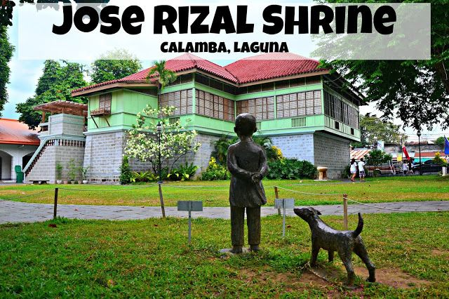

Calamba is perhaps best known as the birthplace of Dr. Jose Rizal, the Philippine national hero. Jose Protacio Rizal Mercado y Alonzo Realonda was born on June 19, 1861, in the ancestral house now known as the Rizal Shrine. The historical significance of Calamba is deeply intertwined with the life and legacy of Rizal, whose writings and ideals played a crucial role in the quest for Philippine independence.
Calamba Laguna is a city that knows how to celebrate. Throughout the year, various festivals and celebrations take place, providing residents and tourists with unforgettable experiences
Another significant historical site in Calamba is St. John the Baptist Parish Church. This Roman Catholic church has stood as a symbol of faith and spirituality for centuries. Its architectural beauty and historical significance makes it a must-visit spot for religious ceremonies and cultural exploration.
Aside from these iconic sites, Calamba Laguna is also home to other historical landmarks, such as the Philippine Independent Church and various ancestral houses that have been preserved to showcase the rich heritage of the town.
The Buhayani Festival is a tribute to the bravery and heroism of Calamba’s local heroes, including the renowned national hero, Jose Rizal. This festival is held annually to commemorate their contributions to the country. The Buhayani Festival is not only a celebration of the past but also an opportunity to inspire and educate the younger generation about the importance of history and the values of bravery and patriotism. It serves as a reminder that the people of Calamba Laguna are proud of their cultural and social heritage and are determined to preserve it for future generations.
Kesong puti is a Filipino soft, unaged, white cheese made from unskimmed carabao milk and salt curdled with vinegar, citrus juices, or sometimes rennet. It can also be made with goat or cow milk. It has a mild salty and tart flavor. When an acidifying agent is used, it resembles queso blanco or paneer.
Come and explore